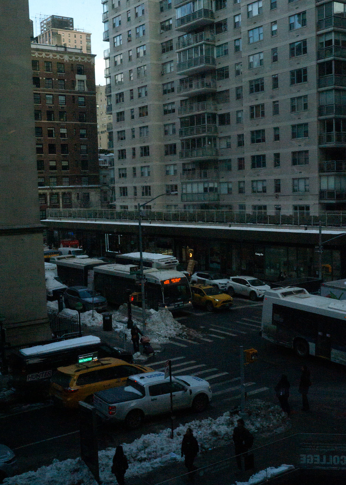

I chose this picture because I really liked how the setting shows off a typical city landscape with people walking on the sidewalk and lots of traffic going on. The buildings in the back create a lot of depth because it just towers all the vehicles and pedestrians. They kind of act like a frame that directs your attention to the busy street below. The lighting of the picture is very dark and cool toned which makes the yellow taxis and the orange bus light really stand out. One thing I really like about this image is how it looks asymmetrical but it feels so balanced. I'm not sure what the term is called but everything just feels straight like it was meant to be.